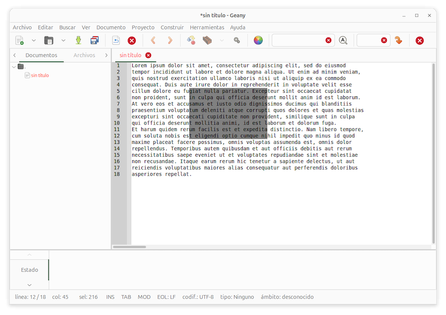
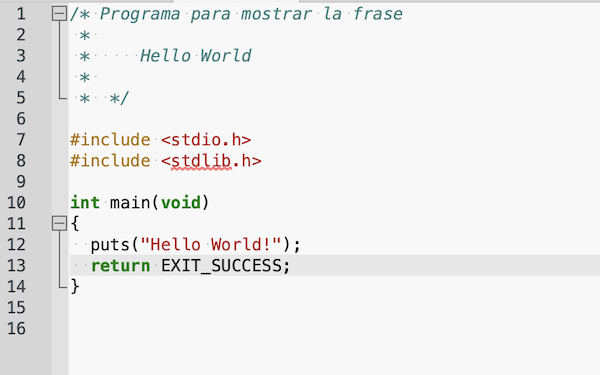
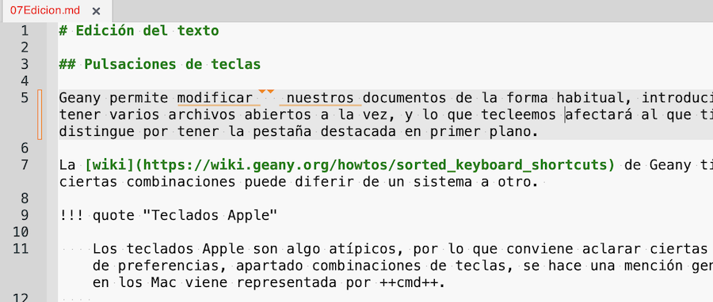

Edición del texto¶
Pulsaciones de teclas¶
Geany permite editar los documentos de la forma habitual, tecleando y borrando texto. Podemos tener varios archivos abiertos a la vez, y lo que introduzcamos afectará al documento que tiene el foco del teclado, que se distingue por tener la pestaña destacada en primer plano.
La wiki de Geany tiene un resumen de combinaciones de teclas. El uso de algunas de ellas puede diferir de un sistema a otro.
Teclados Apple
Los teclados Apple son algo atípicos, por lo que conviene aclarar ciertas peculiaridades. En la configuración de preferencias, apartado combinaciones de teclas, se hace una mención genérica a la tecla <primary>, que en los Mac viene representada por Cmd.
Existen teclas que no están presentes, y se logran mediante una combinación especial:
- Home se logra pulsando Fn+Left
- End mediante Fn+Right
- Page Up mediante Fn+Up
- Page Down mediante Fn+Down
- Del mediante Fn+Backspace
La tecla Ins no existe en los teclados Mac. En algunas aplicaciones parece que se puede emular pulsando Fn+Enter, pero no he logrado que me funcione con Geany. Si trabajamos con una máquina virtual, suele haber alguna funcionalidad en el software de virtualización para enviar pulsaciones especiales.
Algunas de las combinaciones básicas de Geany son:
-
F1 abre el manual de ayuda
-
F10 abre el menú principal. Usar Left Right para desplazarse de un menú a otro. Down y Enter para ir a una opción y ejecutar el comando asociado.
-
Teclas para poner el foco en:
- F2 panel de edición
- F4 terminal de comandos
-
Si pulsamos Home o End, el cursor va al final o principio de la línea. Pero cuando usamos ajuste de línea, si tenemos una muy larga que se muestra partida en varias, estas teclas van al final o principio del conjunto, salvo que usemos Alt+Home o Alt+End, lo que situa el cursor al principio o final de cada línea virtual.
-
La tecla Home va al inicio de la línea, pero si está sangrada, con espacios en blanco al inicio, en realidad va al primer carácter que no sea un espacio. Hay que pulsar Home dos veces para que vaya al extremo de la línea, incluyendo los espacios.
A esto se le llama Tecla de Inicio Inteligente, y se puede desactivar con Editar > Preferencias > Editor > Características.
-
Podemos cambiar de un documento abierto al siguiente/anterior pulsando en las pestañas, o con Ctrl+Page Down y Ctrl+Page Up.
-
Cuando tenemos un documento extenso y hemos desplazado el texto sin cambiar la posición del cursor, Ctrl+Shift+L regresa de nuevo a la línea actual.
-
Ctrl+B Lleva el cursor al paréntesis de apertura o cierre correspondiente al actual. Una segunda pulsación devuelve el cursor de vuelta al otro paréntesis. Funciona también con llaves
{ }o corchetes[ ]. -
Las teclas para copiar y pegar al portapapeles son las habituales:
- Ctrl+C copiar texto seleccionado
- Ctrl+X cortar texto seleccionado
- Ctrl+V pegar contenido del portapapeles
-
La tecla de deshacer es Ctrl+Z y la de rehacer, Ctrl+Y.
Para la edición, Geany se basa en los atajos de teclado predeterminados por el editor Scintilla, que pueden ser anulados si asignamos una combinación de teclas a otra función:
- Aumentar tamaño del texto: Ctrl++
- Reducir tamaño del texto: Ctrl+-
- Añadir sangría al texto: Tab, siempre que el cursor esté al inicio de la línea o del texto sangrado. En caso contrario se inserta un carácter de tabulación.
- Eliminar sangrado: Shift+Tab, siempre que el cursor esté al inicio de la línea o del texto sangrado. En caso contrario se desplaza el cursor hacia atrás.
- Borrar hasta inicio de palabra: Ctrl+Backspace
- Borrar hasta fin de palabra: Ctrl+Del
- Borrar hasta inicio de línea: Ctrl+Shift+Backspace
- Ir a inicio de documento: Ctrl+Home
- Extender selección hasta inicio de documento: Ctrl+Shift+Home
- Ir al inicio de línea mostrada: Alt+Home
-
Extender selección hasta inicio de línea mostrada: Alt+Shift+Home
-
Ir a final de documento: Ctrl+End
- Extender selección hasta final de documento: Ctrl+Shift+End
-
Extender selección hasta final de línea mostrada: Alt+Shift+End
-
Párrafo anterior: Ctrl+Up
- Párrafo siguiente: Ctrl+Down
- Palabra anterior: Ctrl+Left
-
Palabra siguiente: Ctrl+Right
-
Extender selección hasta párrafo anterior: Ctrl+Shift+Up
- Extender selección hasta párrafo siguiente: Ctrl+Shift+Down
- Extender selección hasta palabra anterior: Ctrl+Shift+Left
- Extender selección hasta palabra siguiente: Ctrl+Shift+Right
La tecla Alt+1 selecciona la pestaña del primer documento, Alt+2 la del segundo, y así sucesivamente. Alt+0 selecciona la pestaña más a la derecha.
Mayúsculas/Minúsculas¶
¿Cuantas veces nos hemos visto tecleando inadvertidamente un texto en mayúsculas cuando lo queríamos en minúsculas? Geany permite seleccionar un bloque de texto e invertir los caracteres mediante el menú Editar > Formato > Convertir selección.
Típicamente, esta operación lleva una combinación de teclas asociada. Comprobarlo con el menú Ayuda > Combinaciones de teclas > Formato > Convertir selección a may/min.
Líneas demasiado largas¶
Si tenemos una línea que no cabe en el espacio visible del editor, en el borde inferior de la ventana de edición contamos con una barra de desplazamiento para mover la vista del documento de izquierda a derecha.
Podemos mostrar una línea vertical de guía en el panel de edición, que nos servirá de referencia para limitar el ancho del texto. De esta forma, cuando una línea rebase este límite, nos acordaremos de pulsar Enter para insertar un salto de línea.
La visualización de esta guía se activa con Editar > Preferencias > Editor > Mostrar > Marcador de línea larga. Puede consistir en una línea o en un cambio de color de fondo a la izquierda y derecha de la línea.
La opción de menú Documento > Salto de línea activa la posibilidad de insertar automáticamente el carácter de salto cuando llegamos al límite, que se establece con Editar > Preferencias > Editor > Características > Columna de salto de línea. ¡Cuidado! También se puede personalizar a nivel de proyecto, si tenemos uno abierto. Configurarlo con Proyecto > Propiedades > Editor. Las configuraciones de proyecto tendrán prioridad sobre la general.
La opción de menú Documento > Ajuste de línea activa la visualización completa de líneas largas mostrándolas partidas en varias líneas, aunque físicamente no exista un carácter de salto entre línea y línea. En este caso, para desplazarse al final e inicio de la línea tenemos cuatro combinaciones de teclas:
- Ir al final de la línea física: End
- Ir al inicio de la línea física: Home
- Ir al final de la línea mostrada: Alt+End
- Ir al inicio de la línea mostrada: Alt+Home
... a menos que cambiemos las combinaciones de teclas.
Selección de texto¶
Podemos seleccionar texto colocando el cursor en un extremo del bloque a seleccionar, y seguidamente:
- pulsando Shift, usar las teclas de flechas para aumentar o disminuir la selección
- o bien, pulsar con el ratón en el otro extremos del bloque mientras pulsamos Shift
- o bien, arrastrar el ratón hasta seleccionar el bloque
Un caso particular es la selección de una región rectangular. Se hace pulsando Ctrl+Shift (teclas Alt+Shift en Windows) mientras arrastramos la selección, o bien pulsando Ctrl+Shift en ambos extremos del rectángulo, la esquina superior izquierda y la inferior derecha:

Una vez hecha la selección, todo lo que tecleemos sustituirá a lo seleccionado, replicándose en todas las líneas del rectángulo.
Resulta muy útil si seleccionamos un bloque de n filas y cero columnas. El texto tecleado a continuación se replicará en múltiples líneas.
Visualización más allá del final¶
Por defecto, al llegar a la última línea del documento, Geany no permite desplazarlo para mostrar líneas en blanco a continuación. Podemos desactivar esto mediante Editar > Preferencias > Editor > Mostrar, desmarcando la opción Detener desplazamiento al alcanzar la última línea.
En el mismo apartado podemos establecer el mínimo número de líneas que se mantendrán visibles entre el cursor y los bordes superior e inferior de la vista.
Espacios virtuales¶
Si pulsamos con el ratón más allá del extremo derecho de una línea, el cursor se situará a continuación del último carácter. No es posible ubicarlo en el espacio vacío que hay a la derecha.
Pero podemos activar esta posibilidad. Se hace con Editar > Preferencias > Editor > Mostrar > Espacios virtuales. La opción "Sólo para selecciones rectangulares" muestra espacios virtuales solo en el caso de las líneas que forman parte de una selección rectangular.
Si situamos el cursor en el espacio virtual, no se insertarán caracteres en blanco hasta que tecleemos algún texto en la posición del cursor.
Plegado¶
En determinados tipos de archivo, podemos identificar diferentes secciones en el texto. Por ejemplo, supongamos un programa en lenguaje C:

Cuando Geany detecta que se trata de un archivo de este tipo, identifica los bloques de texto y los marca con una linea vertical lateral, acompañada de un icono [-] en la primera línea del bloque. En el ejemplo tenemos dos bloques, uno de comentarios, y el cuerpo de la función main().
Pulsando en ese icono [-] podemos "plegar" el bloque, es decir, ocultar el texto dejando visible solo la primera línea, para concentrarnos en la edición de otras partes del documento. El icono cambiará a [+] para volver a desplegar el texto ocultado.
Podemos desactivar esta función de plegado de texto con Editar > Preferencias > Editor > Plegado de código.
Dependiendo del tipo de archivo, se admite el plegado anidado, es decir, un bloque dentro de otro. Según la configuración de Geany, al desplegar el bloque externo se desplegarán también los internos, y viceversa. Esto se puede cambiar con la opción "Plegar/Desplegar todos los hijos de un punto de plegado" en el cuadro de diálogo de preferencias. Si está activado, Geany desplegará todos los puntos de plegado anidados debajo del actual si ya están plegados (al hacer clic en un símbolo [+]). Al hacer clic en un símbolo [-], Geany plegará todos los puntos de plegado anidados debajo del actual si están desplegados.
Esta opción se puede invertir presionando la tecla Shift mientras se hace clic en un símbolo de plegado. Eso significa que, si la opción "plegar/Desplegar todos los hijos de un punto de plegado" está habilitada, presionar Shift la deshabilitará para este clic y viceversa.
Arrastrar texto¶
Si seleccionamos texto y lo arrastramos con el ratón, dicho texto se moverá a la posición donde está el puntero del ratón al soltar el botón. Si mantenemos presionada la tecla Ctrl durante el arrastre, al soltar el botón del ratón, se copiará el texto.
Autocierre¶
Entre los complementos de Geany tenemos uno llamado Auto-close que, si lo activamos, hace que cada vez que tecleemos un paréntesis, llave, corchete de apertura, comillas, etc se inserta un carácter de cierre para que no se nos olvide. Se puede configurar mediante Editar > Preferencias de complementos, admitiendo multitud de opciones.
Sangrado¶
El sangrado de líneas consiste en la posibilidad de añadir espacios en blanco a la izquierda de una línea o de un bloque de líneas:
texto línea 1
texto sangrado
más texto sangrado
última línea del documento
La sangría puede estar formada por caracteres de espacio o de tabulación. A primera vista no es posible distinguir si se trata de una u otra modalidad de espaciado. Podemos visualizar esos caracteres mediante el menú Editar > Preferencias > Editor > Mostrar > Mostrar espacios en blanco. Si lo activamos, los espacios se mostrarán como puntos en un color gris muy diluido, apenas perceptible (depende de la configuración de colores), y los caracteres de tabulación, como flechas -->
La tecla Tab tiene dos usos:
-
si tenemos el cursor en mitad de una línea, inserta un carácter de tabulación, o bien el número equivalente de caracteres de espaciado, según como tengamos configurado Geany.
-
si tenemos el cursor al principio del texto de la línea, añade un nivel de sangría, formado por tabuladores o espacios, según la configuración del editor.
La sangría se configura mediante el menú Editor > Preferencias > Editor > Sangría. Podemos establecer que, al pulsar Tab, se inserte un carácter de tabulación o un número de espacios. También podemos optar por una combinación de ambos. En este tercer caso, se sangra usando espacios si la sangría a obtener es menor que el ancho de la tabulación.
Para suprimir un nivel de sangría, situarse al inicio de la línea y pulsar Shift+Tab. El uso de esta combinación y el de Tab para aumentar la sangría, se puede desactivar desmarcando casillas en Editar > Preferencias > Editor > Sangría. En ese caso, la tecla Tab se limitará a insertar un carácter de tabulación allá donde esté el cursor.
Otra forma de eliminar sangría es situar el cursor al inicio del texto (no al de la línea) y pulsar la tecla de retroceso Backspace. Se suprimirá un nivel de sangría en lugar de un carácter de espacio. Esto se puede desactivar con Editor > Preferencias > Editor > Sangría, desmarcando Tecla de retroceso elimina sangría.
La forma de sangrado puede establecerse a nivel general, a nivel de documento, o por proyecto, teniendo preferencias las últimas sobre las primeras:
- La configuración general se obtiene mediante el menú Editar > Preferencias.
- La configuración específica de un documento, mediante el menú Documento > Tipo de sangría.
- La configuración específica de un proyecto, formado por varios archivos, mediante el menú Proyecto > Propiedades. Más adelante veremos la gestión de proyectos.
El modo de sangrado para el documento en edición se muestra en la barra de estado, y puede ser:
- TAB - Usa tabuladores
- SP - Utiliza espacios. En la versión de Geany traducida al idioma español suele mostrar "ES"
- T/S - Utiliza ambos
Si cambiamos la configuración, podríamos querer aplicar la nueva a los documentos abiertos en la sesión actual. Hacerlo con el menú Proyecto > Aplicar sangría predeterminada.
En la configuración de tipo de sangría existe una cuarta opción, que consiste en aplicar lo que se detecte tras analizar el contenido de cada fichero. Se establece haciendo un recuento de cuantas líneas usan tabuladores frente a cuantas usan 2 o más espacios.
Tamaño de la sangría¶
Cuando insertamos un nivel de sangría en forma de espacios, o cuando convertimos un carácter de tabulación en espacios, se aplica al número de espacios configurado, por defecto, cuatro. Se establece don Editar > Preferencias > Editor > Sangría.
En lugar de aplicar un tamaño estándar, en la configuración podemos activar la opción de detectar el número de espacios a partir de lo que se está utilizando como sangría en el texto actual del documento.
Auto sangrado¶
Si al editar una línea de texto pulsamos Enter, el cursor va al inicio de la línea siguiente. Pero si la que abandonamos está sangrada, podríamos querer que el cursor se alinee con el texto de la línea precedente, introduciendo un sangrado automático en la nueva línea. A esto se le llama autosangrado. Se activa con el menú Documento > Sangría automática.
Geany tiene cuatro tipos de auto-sangrado, lo que se establece con el menú Editar > Preferencias > Editor > Sangría > Modo de sangría automática:
Ninguna- Desactiva el auto-sangradoBásica- Añade la misma sangría que en la línea anterior, respetando la combinación de espacios y tabuladores-
Carácter actual- Lo mismo que laBásica, pero dependiendo del lenguaje de programación, también añade sangría tras una llave de apertura{y la suprime tras una llave de cierre}. En programas Python, añade sangría si la línea anterior termina en: -
Coincidir con llaves- Similar a lo anterior, pero la llave de cierre}se alineará para que la sangría coincida con la de la llave de apertura{. Esto requiere que el tipo de archivo sea uno de los reconocidos por Geany (C, C++, D, HTML, Pascal, Bash, Perl, TCL).
También hay un autosangrado para archivos XML, disponible cuando el modo es carácter actual o coincidir con llaves.
Sustituir tabuladores por espacios¶
Si en nuestro documento tenemos una mezcla de caracteres de tabulación y espacios no deseada, podemos hacer limpieza mediante:
- Menú Documento > Reemplazar tabulaciones por espacios
- Menú Documento > Reemplazar espacios por tabulaciones
En Editar > Preferencias > Archivos > Guardado podemos configurar que se sustituyan los tabuladores por espacios al guardar el documento.
Borrar espacios al final de cada línea¶
Los espacios en blanco que hay al final de cada línea suelen pasar inadvertidos. Podemos detectar su presencia si activamos la visualización de los caracteres de salto de línea con Editar > Preferencias > Editor > Mostrar > Finales de línea.
Podemos suprimir espacios sobrantes, haciendo una limpieza general en todo el documento, con el menú Documento > Borrar espacios finales.
También podemos configurar Geany para que suprima los espacios que hay al final de cada línea al guardar los archivos. Se hace con Editar > Preferencias > Archivos > Guardado > Borrar espacios al final.
Con Editar > Preferencias > Editor > Características podemos activar que, cada vez que pulsemos Enter para introducir una nueva línea, se eliminen los espacios finales.
Guías de sangría¶
Al igual que podemos mostrar espacios y tabuladores con un carácter de punto y flecha difuminado, también podemos mostrar una guía de sangría en forma de barra vertical muy tenue. Se visualizará en aquellas líneas sangradas más de un nivel, y sirve para conocer cuantos niveles de sangría tiene una línea en particular.
Se activa con Editor > Preferencias > Editor > Mostrar > Mostrar guías de sangría.
Historial de cambios¶
La función de historial de cambios muestra marcas para indicar el texto modificado en un documento desde que se abrió. De forma predeterminada, esta función está deshabilitada:

Se activa mediante el menú Editar > Preferencias > Editor > Mostrar > Historial de cambios. Es posible que haya que reiniciar Geany.
Hay dos modalidades:
-
Subrayar el texto modificado o añadido. Allí donde se eliminaron caracteres, se muestran unos pequeños triángulos.
-
Indicar los cambios en la barra de margen lateral. Se mostrarán como barras verticales de diferentes colores, según el estado de la línea. El color naranja significa que hay cambios, el verde, que se han guardado, y el azul, que se han deshecho los cambios tras guardar.
Esta característica puede utilizar una cantidad importante de memoria, especialmente si hay muchos o grandes cambios en el documento. Además, la información de modificación no se conserva al volver a abrir un documento; se perderán todos los marcadores de cambios.
Eliminar líneas sobrantes¶
El complemento Addons (añadidos) tiene una función Strip trailing blank lines que, al guardar un archivo, elimina del mismo las líneas en blanco al final del documento. Activar el complemento desde el menú Herramientas > Administrador de complementos y seguidamente, Editar > Preferencias de complementos y marcar Strip trailing blank lines.
De todas formas, se mantiene una única línea en blanco si activamos Preferencias > Archivos > Guardado > Asegurar terminación de línea al final del archivo.
Operaciones con líneas de texto¶
El complemento Line Operations añade varias opciones de edición de líneas completas de texto. Se pueden aplicar a todo el contenido de un archivo abierto o a una selección:
- Eliminar líneas duplicadas, ordenando el resto
- Eliminar líneas duplicadas, sin ordenar
- Eliminar líneas únicas y dejar las duplicadas
- Mantener solo las líneas únicas
- Eliminar líneas vacías vacías, sin ningún carácter (deja las líneas con espacios en blanco)
- Eliminar líneas con solo espacios en blanco (suprime también las vacías; cuenta tabuladores como espacios)
- Eliminar cada n línea
- Ordenar líneas en orden ascendente
- Ordenar líneas en orden descendente
Una vez activado el complemento (menú Herramientas>Administrador de complementos), aparecerá una nueva entrada en el menú Herramientas > Operaciones con líneas. Pulsar sobre una operación para aplicarla a todo el archivo o a la selección.
Este complemento tiene una opción de configuración (Editar > Preferencias de complementos). Consiste en activar la comparación de textos basada en intercalación. Cuando esta opción está habilitada, comparará cadenas utilizando reglas lingüísticamente correctas para la configuración regional de la máquina. Cuando está deshabilitada, comparará cadenas según el código numérico de los caracteres. Esta opción está deshabilitada de forma predeterminada.
Por ejemplo, si tenemos:
baño
bazo
bajo
Al seleccionar esas tres líneas y pulsar en Herramientas > Operaciones con líneas > Ordenar ascendente, con la opción desactivada se compararán bytes al ordenar:
bajo
bazo
baño
Vemos que el código de la letra ñ es superior a los del alfabeto anglosajón a-z. Para aplicar nuestra configuración regional activamos la comparación de textos basada en intercalación
bajo
baño
bazo
Cuando se realiza una selección en el archivo, la operación de líneas se aplicará a las líneas dentro de la selección. Si la primera o última línea están seleccionadas parcialmente, se toman las líneas completas, incluidas esas dos. Si el final de la selección está más allá del último salto de línea, se incluirá la línea siguiente.
Véase más detalles en la documentación del complemento
Ortografía¶
Geany cuenta con un corrector ortográfico en forma de complemento, que debemos activar mediante el menú Herramientas > Administrador de complementos > Spell Check.
Una vez activado, se adapta al idioma local de la computadora. Se configura mediante el menú Editar > Preferencias de complementos.
La revisión automática, a medida que se escribe, se puede activar o desactivar mediante un icono [ab] en la barra de herramientas, bajo la barra de menú. Una vez activo, las palabras no reconocidas se subrayarán automáticamente. Pulsando sobre una de esas palabras con el botón secundario del ratón, en el menú contextual podemos pulsar en la opción Spelling suggestions para seleccionar la palabra correcta, añadirla como nueva palabra al diccionario, o hacer que se ignore en adelante.
Grabar secuencia de pulsaciones¶
El complemento Keystrokes Recorder permite memorizar una secuencia de pulsaciones y reproducirla. Una vez activado, tenemos que asignar dos combinaciones de teclas (menú Editar > Preferencias > Combinaciones):
- Keystrokes recorder start/stop
- Keystrokes recorder play
Macros¶
Geanymacro es un complemento que proporciona macros definidas por el usuario para Geany. Las macros son secuencias de acciones que luego se pueden repetir con una sola combinación de teclas.
Por ejemplo, si tenemos cientos de líneas en las que desea añadir dos 2 caracteres al final:
- Pulse en Herramientas > record macro
- En la ventana de diálogo introduzca
- Trigger: introduzca una combinación de teclas
- Name: un nombre para la macro
- Pulse en el botón Record para empezar la grabación
- Introduzca texto o realice otras acciones
- Pulse en el menú Herramientas > Stop Recording
Cada vez que pulsemos en la combinación de teclas, se reproducirá la macro. Podemos ver una lista de macros pulsando en Herramientas > Edit Macros. En la ventana de diálogo se mostrará la lista de macros existentes, y podemos borrarlas, e incluso modificarlas.
Tengase en cuenta que las acciones de deshacer y rehacer no se graban y no se reproducirán cuando se vuelva a ejecutar la macro.
Podemos configurar este complemento de dos maneras
-
Guardar macros al cerrar Geany. Si esta opción no está activada, las macros se perderán cuando se cierre Geany. Activarla para que las macros sigan presentes en la próxima sesión.
-
Preguntar antes de reemplazar macros existentes. Si intentamos grabar una macro sustituyendo una existente, esto se comprobará antes de sobrescribirla, lo que nos dará la opción de probar un nombre o una combinación de teclas de diferentes. Si no se activa esta opción, se borrarán las macros existentes con el mismo nombre o con la misma combinación de teclas.